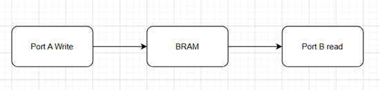

FPGA Design Lab4
本次 lab 將介紹如何使用 AXI BRAM Controller，並學習直接透過 Verilog 語法呼叫 Block BRAM，也就是 Verilog Template 的設計方法，實作一個 On-Chip Memory System。
點我下載參考資料夾，內含本次教學或 Lab 所需的程式碼（ZIP）
🛠️ Verilog Template vs Vivado IP Core
| 項目 | 手寫 Verilog Template | 使用 Vivado IP Core (e.g. FIFO Generator) |
|---|---|---|
| ⚙ 設計彈性 | ✅ 高，可自定資料寬度、控制方式等 | ❌ 中等，彈性依 IP 設定項目而定 |
| 🔍 可讀性 / 可維護性 | ❌ 較低，需手動管理 FIFO 邏輯 | ✅ 較高，IP 有圖形化介面與文檔支持 |
| 🔄 整合 Vivado BD | ❌ 需手動 RTL instantiation 和 port mapping | ✅ 自動整合，容易連接到 AXI/AXI-Stream |
| 🧪 驗證方便性 | ❌ 較麻煩，需要自己寫 testbench 或與 AXI 對接 | ✅ 已知功能穩定，Xilinx 已驗證 |
| 🧱 資源使用效率 | ✅ 可最佳化，依照特定需求裁剪資源 | ❌ 通常較大、保守，為泛用性設計 |
| ⏱ 開發時間 | ❌ 長，需要開發與除錯 | ✅ 快，幾分鐘內可產生並連接好 |
| 📤 時序優化與建議 | ❌ 自己負責 reset、clock domain、timing closure | ✅ IP 通常已考慮 CDC/latency |
| 📚 學習與理解價值 | ✅ 非常好，幫助了解 FIFO / memory 實作 | ❌ 抽象化高，學習價值相對少 |
Verilog Template
主要分成兩個部分 : Available Attributes 、 Port Descriptions
-
Available Attributes: 可設定 Block RAM 的操作模式、初始值、資料寬度等等參數。 -
Port Descriptions: 定義 Block RAM 的 I/O Ports。
Spec

Bram controller 配置
AXI BRAM controller只會被分配到一個Address，只能控制一個 port ，因此本次設計為 True Dual Port 的情況下需使用到兩顆 AXI BRAM Controller ， 這樣子才能獲得兩個 Address 來給 BRAM 的 Port A、
Port B 做使用。

AXI protocol為Byte Addressable的， 而我們要控制的BRAM為32Kb的大小， 換算成Byte為32Kb / 8bit = 4KB，因此在 Range設定這邊需使用4K。

根據 address path diagram可以看到，分配給AXIBram Controller 的
0x4000_0000 - 0x4000_0FFF 經過 AXI Smart Connect 後就會變成 0x0 - 0xFFF，給後續32Kb(4KB)的BRAM做使用。

RAMB36E1 template參數設置
IP I/O
Addr Width 為 12bit，因為 AXI protocol 為 Byte Addressable的，32Kb
的記憶體需要用到 4K 的 range 去做定址，因此為 12bit-width。
Data Width 為 32bit，因此 input(D_in_X)、output(D_out_X) 的部分都設置為32bit。

RAMB36E1 Available Attributes
根據 SPEC 要求，將 RAM_MODE 設置為 True Dual Port mode。
DOA_REG、DOB_REG 都設成 1，在 RAMB36E1 的 output 將會有一個額外的 Register 拿來儲存輸出的值，讓後續的電路可以有一個完整的 cycle 來 做存取資料。
ECC設置皆設定成 FALSE，因 RAMB36E1 設置成TDP模式時不能使用 ECC。

RAMB36E1 在 TDP 模式下，Port Data Width 只能設置成下方幾種數字，此次設計為 read/write width
為 32bit 的 BRAM ，因此設置成 36bit ， 36bit 其中 32bit 為 data 另外4個 bit 為 Paritybit ，雖然 TDP 下不支援 ECC 但根據 xilinx 提供的文檔我們不能單純設置成 32bit 仍需設置成 36bit 才正確。

依 SPEC 要求，每 32 bit 為一個 word。 Offset 則為從 Base address 往後幾個 Byte，其中每4個 offset 代表 4 byte，亦即 1 word 。 E.g. offset=28，則將數值設置在第 7 個 word 上。

RAMB36E1 Port Descriptions
RAMB36E1 在 True Dual Port (TDP) 模式下支援 asynchronous clock domains，Port A、Port
B可以使用不同的clock。

因 RAMB36E1 支援 Byte wise write，因此 WriteEnable 訊號為 4bit，因為 32bit width
為 4Byte，WriteEnable 的 4 個 bit 各控制其中一個 Byte 的讀寫。
E.g.:若只要更新第一個byte，則WEA將被 設定成4’b0001


先前在 Avaliable attribute 時，有設定 output register ，而下圖兩個訊號則控制該 output register 是否去做更新，因此都設為1，使他保持更新 output register。

RAM input/output data 皆為 32-bit，而 DOADO()、DOBDO() 為 output dual port，DIADI()、 DIBDI() 為 input dual port。

RAMB36E1 實際上包含 36Kb 的容量，其中32Kb 用於資料儲存（Data Bits），額外的4Kb 則專門用來儲存 Parity Bits，這些位元只會在啟用 ECC 模式時使用。
RAMB36E1 支援最小資料寬度為 1-bit，因此若配置為 1-bit 模式，便需要 2^15 個地址才能存滿 32Kb。 Address Width 之所以設定為 16-bit，是因為：
實際地址需要15-bit 。
最前面保留的1-bit 是用來作為 cascade 模式（串接多個BRAM）時的選擇 bit。
因此總共需要16-bit 的地址輸入。
在使用 AXI BRAM Controller 時，addr_A 提供的是 Byte Address， 而 RAMB36E1 實際以每1 word = 32 bits = 4 bytes 為單位存取。因此在連接時需將最低 0～1 位元忽略，地址從 addr_A[11:2]開始使用，此處的位元表示的是第幾個 word 單位的地址。

根據xilinx提供的BRAM配置文檔可以看到，Port Address Width = 10bit 對應到我們設置的 addr_A[11:2]，ADDR Bus = [14:5] 則對應到 .ADDRARDADDR 裡面的第 14 個 bit到第2個 bit 剛好為 addr_A[11:2] 的位子。

Utilization of BRAM
根據 Utilization report 可以看到 Pynq-z2 的 BRAM 共有 140 個可使用，而我們這次透過 RAMB36E1 template 實例化了一顆 dual port BRAM 使用了其中的 1 個 BRAM 。因此從上方 utilization report 看到我們BRAM 用了1/140 = 0.71%。

Software Testing Result

進階練習 :
使用 Verilog Template 的方法 ， 將 RAMB36E1 Configure 成 36Kb FIFO 。
💡 Hint： 使用一顆 TDP mode 的 BRAM ，將要寫入 FIFO 的 Data 透過 PortA 寫入，要讀的 Data 透過 Port B 讀出。
